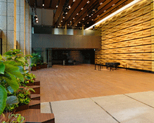

富士山展3.0
「冨嶽二〇二〇景」
About
年に一度。新年に「富士」をテーマとした多様な表現が集い、価値ある作品が売買され、
未来に向けた芸術のあり方を問いかけるのが〈富士山展〉。
そして、インターネット時代の芸術のためのプラットフォーム〈startbahn.org〉です。
表現や表現との出会いの多様化・細分化が進む現代において、真に分野を超えた芸術を生み出す人。そこに価値を見出す人。
所有により、それらを時代に刻む人。それぞれが繋がる機会や場はまだまだ限られています。年に一度、かつては日本で最も描かれ、売買されてきた富士の絵のようにー。新年に「富士」をテーマとした多様な表現が集い、価値ある作品を様々な人の手に届けることから、未来に向けた芸術のあり方を示していくことはできないでしょうか。
〈富士山展〉および、インターネット時代の芸術のためのプラットフォーム〈startbahn.org〉を通して実現していきたいのは、これからの時代に求められる「領域を横断する表現の場づくり」、それにみあった「作品の流通システムづくり」、そして「芸術の価値を伝え、時代に刻む文化の創造」です。経済効率が求められる資本主義社会の中では育みにくかった、オルタナティブな価値も含めた芸術表現のあり方を共につくっていく。 皆様のご参加をお待ちしております。
NEWS
-
富士山展公式サイトを公開しました
毎年富士山の山開きが行われる7月1日に、富士山展公式サイトをOPENしました。
過去の富士山展のアーカイブほか、今後の富士山展情報を公開していきます。 -
富士山展公式サイトを公開しました
毎年富士山の山開きが行われる7月1日に、富士山展公式サイトをOPENしました。
過去の富士山展のアーカイブほか、今後の富士山展情報を公開していきます。 -
富士山展公式サイトを公開しました
毎年富士山の山開きが行われる7月1日に、富士山展公式サイトをOPENしました。
過去の富士山展のアーカイブほか、今後の富士山展情報を公開していきます。
Space
TOKYO
-
双子のライオン堂
〒107-0052
東京都港区赤坂6丁目5-21-101- 1月6日～1月26日
- 15:00ー21:00
【休】日曜、不定期 - Google Map
-

三井住友銀行〜〜〜〜
〒107-0005
東京都千代田区丸の内1丁目3-2- 1月11日～1月22日
- 09:00ー13:00
【休】なし - Google Map
-

HAMMOCK
〒530-0001
大阪府大阪市北区梅田3-1-1- 1月6日～1月26日
- 15:00ー21:00
【休】日曜、不定期 - Google Map
Picker

飛鷹全法
飛鷹全法(高野山高疎員)
高野山別格本山三宝院副住職。 東京大学法学部卒同大学院博士課程中退（比較日本文化論、南方熊楠研究）。 大学院在学中より、ITベンチャーの立ち上げに参画、ソフトウェア開発に携わる。 その後、国際交流基金の事業で、中央アジア・中東・カナダ等で津軽三味線や沖縄音楽を始めとする伝統芸能の舞をプロデュース。2007年より経済産業省主催の海外富裕層誘客事業）の検討委員に就任。

椹木野衣
椹木野衣
東京大学法学部卒同大学院博士課程中退（比較日本文化論、南方熊楠研究）。 大学院在学中より、ITベンチャーの立ち上げに参画、ソフトウェア開発に携わる。 その後、国際交流基金の事業で、中央アジア・中東・カナダ等で津軽三味線や沖縄音楽を始めとする伝統芸能の舞をプロデュース。2007年より経済産業省主催の海外富裕層誘客事業）の検討委員に就任。

四方幸子
四方幸子
高野山別格本山三宝院副住職。 東京大学法学部卒同大学院博士課程中退（比較日本文化論、南方熊楠研究）。 大学院在学中より、ITベンチャーの立ち上げに参画、ソフトウェア開発に携わる。 その後、国際交流基金の事業で、中央アジア・中東・カナダ等で津軽三味線や沖縄音楽を始めとする伝統芸能の舞をプロデュース。2007年より経済産業省主催の海外富裕層誘客事業）の検討委員に就任。

宮津大輔
宮津大輔
高野山別格本山三宝院副住職。 東京大学法学部卒同大学院博士課程中退（比較日本文化論、南方熊楠研究）。 大学院在学中より、ITベンチャーの立ち上げに参画、ソフトウェア開発に携わる。 その後、国際交流基金の事業で、中央アジア・中東・カナダ等で津軽三味線や沖縄音楽を始めとする伝統芸能の舞をプロデュース。2007年より経済産業省主催の海外富裕層誘客事業）の検討委員に就任。

伊藤亜紗
伊藤亜紗
東京工業大学リベラルアーツ研究教育院准教授 東京工業大学環境・社会理工学院社会・人間科学コース准教授 MIT 客員研究員（2019.3-8） 2010年に東京大学大学院人文社会系研究科基礎文化研究美学芸術学専門分野を単位取得のうえ、退学。同年、同大学にて博士号を取得（文学）。学術振興会特別研究員をへて、2013年に東京工業大学リベラルアーツセンター准教授に着任。2016年４月より現職。主な著書に『ヴァレリーの芸術哲学、あるいは身体の解剖』（水声社、2013年）、『目の見えない人は世界をどう見ているのか』（光文社、2015年）、『눈이 보이지 않는 사람은 세상을 어떻게 보는가 』（2016年）、『目の見えないアスリートの身体論』（潮出版、2016年）、『どもる体』（医学書院、2018年）。同時並行して、作品の制作にもたずさわる。

武田 秀樹
武田 秀樹
高野山別格本山三宝院副住職。 東京大学法学部卒同大学院博士課程中退（比較日本文化論、南方熊楠研究）。 大学院在学中より、ITベンチャーの立ち上げに参画、ソフトウェア開発に携わる。 その後、国際交流基金の事業で、中央アジア・中東・カナダ等で津軽三味線や沖縄音楽を始めとする伝統芸能の舞をプロデュース。2007年より経済産業省主催の海外富裕層誘客事業）の検討委員に就任。

山下有佳子
山下有佳子
東京工業大学リベラルアーツ研究教育院准教授
東京工業大学環境・社会理工学院社会・人間科学コース准教授
MIT 客員研究員（2019.3-8）
2010年に東京大学大学院人文社会系研究科基礎文化研究美学芸術学専門分野を単位取得のうえ、退学。同年、同大学にて博士号を取得（文学）。学術振興会特別研究員をへて、2013年に東京工業大学リベラルアーツセンター准教授に着任。2016年４月より現職。主な著書に『ヴァレリーの芸術哲学、あるいは身体の解剖』（水声社、2013年）、『目の見えない人は世界をどう見ているのか』（光文社、2015年）、『눈이 보이지 않는 사람은 세상을 어떻게 보는가 』（2016年）、『目の見えないアスリートの身体論』（潮出版、2016年）、『どもる体』（医学書院、2018年）。同時並行して、作品の制作にもたずさわる。